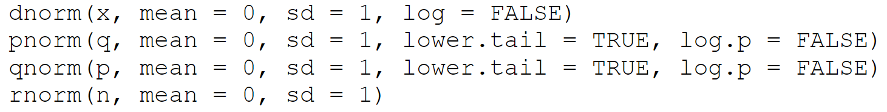

1) Using the require() or library() function, load the packages ggplot2[@ggplot2], dplyr[@dplyr], and ratdat[@ratdat] which contains the dataset complete.
CautionWarning: there is no package called ‘ratdat’
If you receive this warning, run install.packages("ratdat") before you run the line require("ratdat")
2) Inspect the dataset complete from the package ratdat using head(), summary(), and View()
head(complete)
# A tibble: 6 × 13
record_id month day year plot_id species_id sex hindfoot_length weight
<int> <int> <int> <int> <int> <chr> <chr> <int> <int>
1 1 7 16 1977 2 NL M 32 NA
2 2 7 16 1977 3 NL M 33 NA
3 3 7 16 1977 2 DM F 37 NA
4 4 7 16 1977 7 DM M 36 NA
5 5 7 16 1977 3 DM M 35 NA
6 6 7 16 1977 1 PF M 14 NA
# ℹ 4 more variables: genus <chr>, species <chr>, taxa <chr>, plot_type <chr>
summary(complete)
record_id month day year plot_id
Min. : 1 Min. : 1.000 Min. : 1.00 Min. :1977 Min. : 1.0
1st Qu.: 8888 1st Qu.: 4.000 1st Qu.: 9.00 1st Qu.:1984 1st Qu.: 5.0
Median :17775 Median : 6.000 Median :16.00 Median :1990 Median :11.0
Mean :17775 Mean : 6.478 Mean :15.99 Mean :1990 Mean :11.4
3rd Qu.:26662 3rd Qu.:10.000 3rd Qu.:23.00 3rd Qu.:1997 3rd Qu.:17.0
Max. :35549 Max. :12.000 Max. :31.00 Max. :2002 Max. :24.0
species_id sex hindfoot_length weight
Length:35549 Length:35549 Min. : 2.00 Min. : 4.00
Class :character Class :character 1st Qu.:21.00 1st Qu.: 20.00
Mode :character Mode :character Median :32.00 Median : 37.00
Mean :29.29 Mean : 42.67
3rd Qu.:36.00 3rd Qu.: 48.00
Max. :70.00 Max. :280.00
NA's :4111 NA's :3266
genus species taxa plot_type
Length:35549 Length:35549 Length:35549 Length:35549
Class :character Class :character Class :character Class :character
Mode :character Mode :character Mode :character Mode :character
3a) Based on this inspection, describe the dataset:
The dataset contains 31,438 rows and 13 columns describing small mammal observations, including sampling date, plot information, species identity, sex, and morphological measurements such as hindfoot length and weight. The data span multiple years and include some missing values
Here is how we can remove the NA values from the hindfoot length column using dplyr to make this assignment simpler:
# Clean data by removing NAs from datasetcomplete <- complete %>%filter(!is.na(hindfoot_length))
3b) Refer to the in-class lab and do not be afraid to play with the code. Why did we use filter() to accomplish this? Why did we not use select()?
filter() was used because it subsets the data by rows based on a condition, whereas select() only works on columns and cannot remove rows with missing values.
4) Using dplyr, create a new dataframe named df consisting of only the columns genus, species, and hindfoot_length from the complete dataframe from the package ratdat. Hint: how do we select certain columns using dplyr?
5) Create a new column named “genus_species” that combines genus and species names into a single cell with an underscore as a separator using the paste() function (i.e. if Homo is in the genus column, and sapiens is in the species column, the new “genus_species” column would have Homo_sapiens). Refer to the paste() help file if needed. Hint: how do we create new columns using dplyr?
Before contiuning with our data, first let’s learn about the group_by function.
Cautiongroup_by() and ungroup()
dplyr[@dplyr]’s group_by() function is a powerful and convenient way to separate data into groups and perform operations on each group. However, it is important to remember to always use ungroup() after you are done with your group operations. This is because group_by() will continue to affect your data until you use ungroup(). This is even more dangerous because visually you will not see any difference in your data after using group_by().
group location number distance_traveled
Min. :1.00 Length:6 Min. :2.00 Min. :1.00
1st Qu.:2.25 Class :character 1st Qu.:3.25 1st Qu.:1.25
Median :3.50 Mode :character Median :4.50 Median :2.50
Mean :3.50 Mean :4.50 Mean :3.00
3rd Qu.:4.75 3rd Qu.:5.75 3rd Qu.:4.50
Max. :6.00 Max. :7.00 Max. :6.00
Our goal is to find total distance traveled in each location and the total count of individuals across groups
First let’s group by location.
# Grouping by locationdf_grouped1 <- df_dummy %>%group_by(location)
6a) Inspect the grouped dataset and describe any changes you see anywhere throughout the Rstudio interface
After grouping the dataset by location, there is no visible change to the number of rows, columns, or the values shown in the table. The dataset still contains 6 rows and 4 columns with the same summary statistics. The only noticeable change in the RStudio output is the “Groups: location” indicator, which shows that the data are now grouped internally even though the table itself looks the same
Besides the small "Groups: ..." at the top of the output, the data does not appear any different after grouping here.
You are beginning to see why using group_by() without ungroup() can be dangerous.
Now try to meet the goal of finding the distance traveled in each location by creating the column “group_distance” and using the sum() function
# A tibble: 6 × 5
# Groups: location [3]
group location number distance_traveled group_distance
<dbl> <chr> <dbl> <dbl> <dbl>
1 1 A 5 1 2
2 2 A 3 1 2
3 3 B 4 5 11
4 4 B 6 6 11
5 5 C 7 3 5
6 6 C 2 2 5
6b) Inspect and describe the changes. Is that what we were aiming for? Why or why did it not work?
After creating group_distance, a new column is added that shows the total distance traveled for each location. The value is repeated for both rows within the same location because the data are grouped. This meets the goal of calculating distance by location, but it does not collapse the data to one row per location since mutate() adds values to each row rather than summarizing.
6c) Now try to meet the goal of finding the total number of individuals across groups by adding the column “sum”.
# A tibble: 6 × 5
# Groups: location [3]
group location number distance_traveled group_distance
<dbl> <chr> <dbl> <dbl> <dbl>
1 1 A 5 1 2
2 2 A 3 1 2
3 3 B 4 5 11
4 4 B 6 6 11
5 5 C 7 3 5
6 6 C 2 2 5
6d) Inspect and describe the changes. Is that what we were aiming for? Why or why did it not work?
After adding the sum column, the dataset still has the same rows and values, but a new column is created that contains the total number of individuals within each location. The sum is calculated separately for locations A, B, and C and repeated for each row in that location. This is not the overall total across all groups because the data are still grouped by location.
We have 3 sum values instead of the desired overall sum!
This is because we did not ungroup() like we always should. So even thought there is no visual difference after using group_by(), not using ungroup() affects your code downstream.
Now try repeating the above process in one pipe (creating new dataframe df_grouped2 by grouping df_dummy by location, creating the group_distance column, ungrouping by calling the function ungroup() with no arguments, then creating the sum column).
# A tibble: 6 × 6
group location number distance_traveled group_distance sum
<dbl> <chr> <dbl> <dbl> <dbl> <dbl>
1 1 A 5 1 2 27
2 2 A 3 1 2 27
3 3 B 4 5 11 27
4 4 B 6 6 11 27
5 5 C 7 3 5 27
6 6 C 2 2 5 27
After running the one pipe version, two new columns are added. group_distance gives the total distance traveled within each location, so it is repeated for both rows in the same location. After ungroup(), the sum column is calculated across the entire dataset, so it shows one overall total for all individuals and is the same for every row. This is what we were aiming for because it separates the grouped calculation from the overall calculation.
Now that you have learned about group_by() and the importance of ungroup(), how every time we use group_by() we need to always remember to ungroup(), let’s return to our df dataset.
7) In our dataframe df, create a new column called “mean_hindfoot” that takes the average hindfoot length grouped by species (“genus_species”)
Base R has a variety of probability distributions available. Many of them are available in four functions for each distribution by default: random, density, probability, and quantile.
For example, for the normal distribution, the rnorm(), dnorm(), pnorm(), and qnorm() functions are available following the ?Normal help file

CautionNormal Distribution Defaults
Note that by default in R, normal distribution means are set to 0 and standard deviations are set to 1. These values can be changed to fit your needs.
rnorm()
Let’s draw 300,000 random numbers from a normal distribution.
# Randomly draw a number from a normal distribution 300,000 timesnormal_distribution <-rnorm(300000)normal_distribution_df <-data.frame(value = normal_distribution) # Convert vector to dataframenormal_distribution_df$index <-seq_along(normal_distribution_df$value) # Add a numbered column# Calculate mean and standard deviationmean <-mean(normal_distribution_df$value)sd <-sd(normal_distribution_df$value)
10) Inspect the data using summary() and describe it
summary(normal_distribution_df)
value index
Min. :-4.363458 Min. : 1
1st Qu.:-0.679149 1st Qu.: 75001
Median : 0.000247 Median :150000
Mean :-0.001735 Mean :150000
3rd Qu.: 0.672530 3rd Qu.:225000
Max. : 5.603109 Max. :300000
11) Now plot the dataset using a geom_point() scatter plot
ggplot(normal_distribution_df, aes(x = index, y = value)) +geom_point() +labs(title ="Scatter plot of random draws from a normal distribution",x ="Index",y ="Value" )
12) What are your initial impressions of the shape and distribution of this dataset?
From the scatter plot, the values appear randomly distributed with no visible trend over the index. Most points cluster around zero, with fewer extreme values as you move away from the center, suggesting a roughly symmetric distribution.
Plot this distribution as a histogram
Tip
Hint: You will need to include this line in your ggplot pipe:*
geom_histogram(bins = 1000) + # This is the number of rectangular bars in our histogram
ggplot(normal_distribution_df, aes(x = value)) +geom_histogram(bins =1000) +labs(title ="Histogram of random draws from a normal distribution",x ="Value",y ="Count" )
13) What are your impressions of the shape and distribution of this dataset now that it is presented as a histogram? If your impression has changed, how is that possible?
The histogram shows a clear, symmetric, bell-shaped distribution centered around zero. This view makes the overall shape of the data easier to see than the scatter plot, which is why the impression becomes clearer when the data are presented as a histogram.
dnorm()
What is the probability that a value randomly drawn from this dataset is equal to 2? We can estimate this with the dorm() function:
dnorm(2, mean = mean, sd = sd)
[1] 0.05389693
13b) Gut check: look at the plot, does this number make sense? Why or why not?
Yes, the value makes sense. The histogram shows that values near 2 occur in the tails of the distribution and are less common than values near the mean, but they are not extremely rare. The density value reflects this lower but reasonable likelihood.
Now let’s return to our df dataset
14) Look back at the histogram you produced earlier for D. merriami hindfoot length, visually what do you think would be a decent estimate of the mean? What about the mode?
Hint: you can use what we just learned about bin sizes to “zoom” into the data
Based on the histogram, a reasonable visual estimate of the mean hindfoot length for Dipodomys merriami is around 36 mm. The mode also appears to be close to 36 mm, as this is where the highest bar in the histogram occurs.
15a) Calculate the probability that a value randomly drawn from our D. merriami hindfoot length is equal to your visual estimate of the mean.
TipTip: Don’t forget to include the mean and standard deviation calculated earlier in dnorm().
# Extract mean and sd for hindfoot lengthmean <- df %>%filter(genus_species =="Dipodomys_merriami") %>%summarize(mean_hindfoot =mean(mean_hindfoot)) %>%# Reduce to a single valuepull(mean_hindfoot) # Extract as a vectorsd <- df %>%filter(genus_species =="Dipodomys_merriami") %>%summarize(sd_hindfoot =mean(sd_hindfoot)) %>%# Reduce to a single valuepull(sd_hindfoot) # Extract as a vector
dnorm(36, mean = mean, sd = sd)
[1] 0.2724175
15b) From these results do your visual estimates seem accurate? Why or why not do you think that is?
This value is extremely small because the probability of drawing any exact value from a continuous distribution is effectively zero, even at the mean.
16a) Calculate the probability that a value randomly drawn from our D. merriami hindfoot length is equal to your visual estimate of the mode.
dnorm(36, mean = mean, sd = sd)
[1] 0.2724175
16b) From these results do your visual estimates seem accurate? Why or why not do you think that is?
Yes, this result makes sense. Even though the mode represents the most common value visually, the probability of drawing any exact value from a continuous distribution is effectively zero. The histogram shows that values near the mode are common, not that the exact value itself has a high probability.
17) Opinion: what was the most useful and least useful aspect of this lab assignment? Why is that the case for you?
The most useful aspect of this lab was learning how to use group_by() and ungroup() correctly, as it clarified how grouped operations affect downstream calculations. The least useful aspect was calculating the probability of exact values in continuous distributions, since those probabilities are always extremely small and less informative than looking at ranges of values.
References
18) What outside sources did you use to help you complete this work (including books, forums, LLMs, etc.)? Describe how they were used:
This is exactly like what I did for Matt Dean's Field Mammology Course. In addition, if I encountered any roadblocks/did understand the message I was recieving I did honestly use ChatGPT to explain the meaning behind the message.